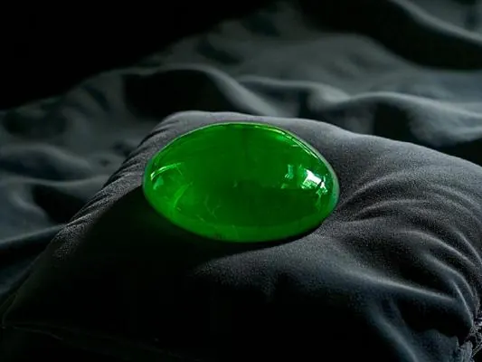

玉的文化：從禮器到傳家寶
八千年來，玉不只是一塊石頭——它是禮器、是道德、是傳家寶，是華人文化的集體記憶。

核心定義
玉文化是華人文明最綿長的物質文化：從新石器時代的紅山文化玉龍、良渚文化玉琮，到商周的玉禮器、漢代的玉衣，再到明清的玉佩——八千年的玉史，是一部中華文明的精神史。
玉的角色三重奏：① 禮器（祭天禮地、身分象徵）；② 道德載體（「君子比德於玉」）；③ 財富與傳家（玉能保值、代代相傳）。翡翠與和田玉，分別代表近世財富與千年傳統兩條脈絡。
特徵與分類
| 時期 | 代表 | 玉的角色 |
|---|---|---|
| 新石器 | 玉龍、玉琮 | 神權禮器 |
| 商周 | 玉璧、玉圭 | 禮制身分 |
| 漢代 | 玉衣、玉蟬 | 永生與葬儀 |
| 明清 | 玉佩、擺件 | 財富藝術 |
| 現代 | 手鐲、掛件 | 佩戴保值 |
「君子比德於玉」：孔子以玉的溫潤、堅硬、潔淨等特質比君子之德——玉從「神權」走向「道德」，成為華人自我修養的象徵。這套文化敘事，讓玉的價值超越礦物與工藝。
科學原理
玉器為什麼能流傳千年？物理基礎是軟玉的韌性（纖維交織結構耐撞耐摔）——玉璧、玉琮在墓葬中保存數千年仍完好。文化基礎是「禮制」——玉是權力與道德的載體，被世代珍藏。
「傳家寶」的經濟學：玉的價值具「稀缺＋保值＋可分割傳承」特性——好玉不貶值（種水色稀缺），且可切割重雕（靈活變現）——它是華人家庭的「硬通貨」。
鑑定與鑑別方法
- 看材質：翡翠 vs 和田玉 vs 其他玉（文化名稱≠礦物）
- 查工藝年代：古玉看沁色、工藝特徵
- 證書：現代消費認 A/B/C 與礦物
- 古玉送專業鑑定（斷代與真偽）
- 文化價值與材質價值分開評估
市場行情與保養建議
市場格局：現代玉市場分「翡翠系」（緬甸硬玉，講種水色）與「和田玉系」（軟玉，講油潤白）兩大陣營；古玉（高古玉）則以文化考古價值定價——三者評估體系截然不同。
趨勢觀察：年輕世代以「設計感＋種水」重新詮釋翡翠，傳統「滿綠」審美與現代「極簡種水」審美並存——玉文化沒有褪色，只是換了表達方式。
常見誤區
古玉的價值在「考古與文化」＋「真偽」——偽古玉滿天飛，真古玉要專業鑑定。現代好料翡翠的價格，可以遠超一般古玉。
「玉養人」有物理成分：佩戴讓玉更溫潤（油脂潤養）；「人養玉」則更多是心理與文化層面（佩玉自律、心安）。兩者都有道理，但都不是神話。
冷知識
良渚人以管鑽、線切割製作玉琮，工藝精度現代複製都困難——五千年前的玉匠，是那個時代的工程師。
西漢中山靖王劉勝的「金縷玉衣」用了兩千多片玉片與金絲——古人相信玉能保屍不朽，是肉身永生的嘗試。
反直覺觀點
現代翡翠的天價是近百年市場化的結果；但玉的「價值」（禮制、道德、傳承）從新石器時代就存在——價格是新的，價值是老的。
古人的玉以「神權與道德」為核心（玉琮、玉璧），現代人以「種水色」為核心——審美標準變了，但「玉是特別的石頭」這個信念，八千年沒變。